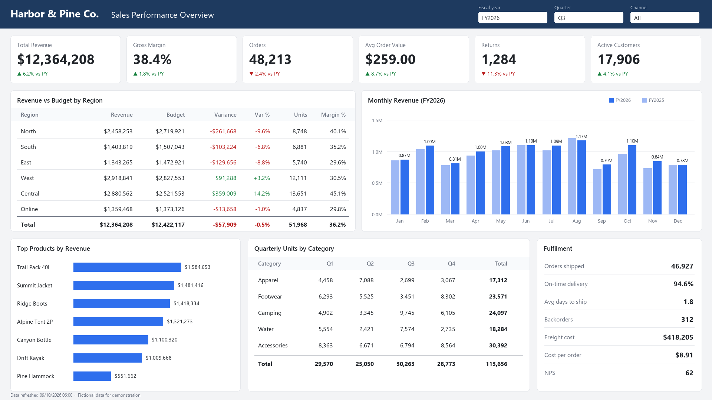

❯ mask --numbers → share
Drop images or folders
png · jpg · webp · bmp · tif · runs fully offline
List(queue/)
⎿ empty⎿ 1 image · 1 folder⎿ 1 image · 1 folder · 1 done · 114 numbers masked
preview/preview/samples/
Bring a screenshot.
Every number gets found by two OCR engines and painted over in the same font, colour and weight.

mode
keep
align new text
scan
output
done · 1/1 images · 114 numbers masked · 4.2s